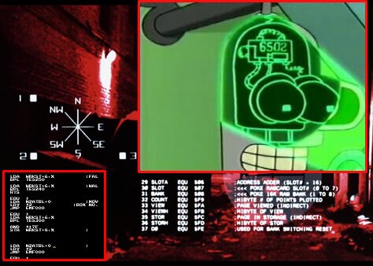
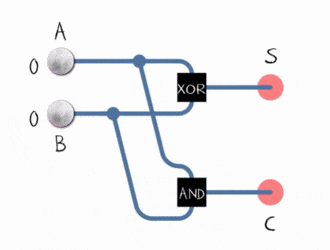

Welcome to The 6502 Extreme
a new "old" source of information for the budding software engineer.

A picture showcasing some references to the 6502 in pop culture. Bottom left is from Kabuki Quantum Fighter for the NES. Top right is Bender from the tv show, Futurama, who is obviously powered by a 6502. The background is from the 1984 hit, Terminator, starring Arnold Schwarzenegger.
Why The 6502?
The 6502 is an intensely interesting processor, that while often modified, was the backbone of many popular systems including the NES, the Atari 2600, Apple IIe, PC-Engine (aka TG16), and the Commodore 64. It's big brother the 65c816 was the processor used in the SNES. It featured only 3 user accessible registers of A, X, and Y with a somewhat unique capability of referencing the bottom 256 bytes from 0x0000 to 0x00FF as what was called a zero-page which could all be referenced with a single 8 bit byte and was therefore faster and treated by many programmers as an additional 256 custom registers.
What could it do?
The 6502 in most setups ran at speeds less than 2 mhz. Which means we won't be seeing DOOM on such a machine but many hackers/democoders have pushed these systems to amazing levels (Most of which can be seen in videos on youtube or through emulation).
I personally started learning 6502 assembler because of an intense interest in why the games of my youth always seemed so much more well designed than the often prettier, more complex games of the modern age. I found that the limitations of game design seemed directly proportional to the ingenuity of these designs. This aspect fascinated me and perhaps it will fascinate you as well. This page as it currently stands is not really particular to the 6502 but I figured I'd peak your interest in the topic by introducing you to these concepts in a similar way as I was introduced to them.
The current iteration of this page is meant as a starting point and will, at this time, not be a full tutorial though such a tutorial may
be coming in the future. Instead we will introduce you to some basic concepts inherent in 8 bit assembler but also useful to programmers as a
generality. Most of these concepts will apply to all programmers even those with no interest in programming the beast that is the 6502.
Number Systems
Let's start with an introduction to number systems such as binary and hexadecimal. Hexadecimal is used for binary conversion as it maps neatly to 4 bits aka a nibble which is 1/2 a byte (8 bits). Here's a handy-dandy table for memorizing the conversions here. The binary places (decimal had places which you learned in your earlier years of ones, tens, hundreds, ...) are multiplicants of 2 from base 1 so for 8 bits they'd be: 128/64/32/16/8/4/2/1 but thanks to Hexadecimal you will probably only need to remember and therefore be able to add to the 8. See the table below for examples.
| Decimal |
Binary |
Hexadecimal |
| 0 |
0000 |
0 |
| 1 |
0001 |
1 |
| 2 |
0010 |
2 |
| 3 |
0011 |
3 |
| 4 |
0100 |
4 |
| 5 |
0101 |
5 |
| 6 |
0110 |
6 |
| 7 |
0111 |
7 |
| 8 |
1000 |
8 |
| 9 |
1001 |
9 |
| 10 |
1010 |
A |
| 11 |
1011 |
B |
| 12 |
1100 |
C |
| 13 |
1101 |
D |
| 14 |
1110 |
E |
| 15 |
1111 |
F |
Booleans Explained
You have probably thought of, and used, boolean operations like AND, OR, or NOT by now but you may not fully understand their usefulness and you may also be neglecting their little brother XOR (eXclusive OR). We will talk a bit about the originals first. If you already have a broad understanding of these concepts you may wish to skip this part. You are probably familiar with using a boolean statement in some type of check such as an if statement. You know that the result you are expecting is gained from the statement returning one of two binary choices (the values are not as well defined in high level languages but the final expectation of True or False is still a binary choice).
Now in low level terms like assembler these instructions work on individual bits of 1s and 0s.
You might AND an 8 bit number by a number like 0x0F (0x denotes hexadecimal) The result of such an operation will return 1 where both the original number and the new new number contain 1s. 0x0F in 8 bits or one byte equals 00001111 so if you were to AND that with 0x2D (00101101) then only the last 4 bits would be preserved resulting in 0x0D (00001101). Effectively this allows you to mask the binary number against the other number. This is useful for a plethora of application and you might find some ways for it to make your overall code more effective as well.
OR is less used in everyday tasks other then for the obvious comparative property however.
It's little brother XOR though is immensely important. It differs in that it is exclusive which means if you XOR 1 by another 1 you will return 0. Otherwise it works exactly like OR. It can be used for a simple somewhat insecure encryption called a XOR Cypher and for understanding how at the lowest level addition works within simple computers and logic gates.
01000001 <- Value to be Encrypted = 0x41 hexadecimal, 65 decimal, A Ascii
11111000 <- Encryption Key
10111001 <- Result (Remember 0 XOR 1 = 1, 1 XOR 0 = 1, 1 XOR 1 = 0, 0 XOR 0 = 0)
Now if we reverse that
10111001 <- Our original result
11111000 <- Our original key
01000001 <- Our original input
For the qualities that make XOR important for adding consider that if you wanted to add 1 and 1 that if you simply ignored the carry then you'd expect the results to be similiar to the XOR property. 1 XOR 1 would produce 0 (we'd be ignoring the carry here), 1 XOR 0 would = 1 (There'd be no carry), and the opposite would be the same. The carry is done with AND from earlier. We'd send the two bits being added to two gates (think of them as the XOR and AND) The result of XOR would be the result in this place and the result of the AND would be carried into the next operation on the next bit.

NOT is somewhat simpler but just as useful to understand for the budding computer scientist. NOT simply returns the binary opposite of its input NOT 1 = 0, NOT 0 = 1. This is used though in a concept that you may be familiar with which is the signed number. A number with a positive and negative representation. Say you have the 8bit binary number 8. 00001000 in binary. Now if you wanted to know how to get to -8 as signed representation in 8 bit you'd NOT the number 11110111 (every bit flipped) and then add 1 (remember to carry) 11111000 which is 0xF8 (or 128 + 64 + 32 + 16 + 8 in Decimal but who has that kind of time?.). This is called a twos complement. Try to follow this but if you imagined that you added these numbers to themselves but restricted them to half full possible values as positive and half as negative (00 to 7F positive, -01 to -7F as negative) then this would actually wrap around to 0x78 which would leave 0x79, 0x7A,0x7B, 0x7C, 0x7D, 0x7E, and 0x7F before we got back to 0x00 (The wrap around point). As you can probably count now that would be 8 values below 0 or -8. Hopefully, you found this enlightening.
Multiplication, the old fashioned way with a shift
Another interesting element of older processors, like the 8 bit 6502, was that they were incapable of complex maths and their built in mathematical functions were essentially just addition and subtraction though faster multiplication was possible thanks to shifts and rotates. The fundamental idea for this is simple enough in that if you imagine a decimal number of 10 and then you were to shift it over one place to the left (and place a 0 in the extra place) you'd have 100 (effectively multiplying the original number by 10. The same process works when speaking of binary numbers except now when shifting instead of multiplying by 10 like we did above we multiply by 2 for each shift. This combined with some adding allowed such complex operations. You could also always just add all the numbers but this would be much slower and therefore shifting was essential.